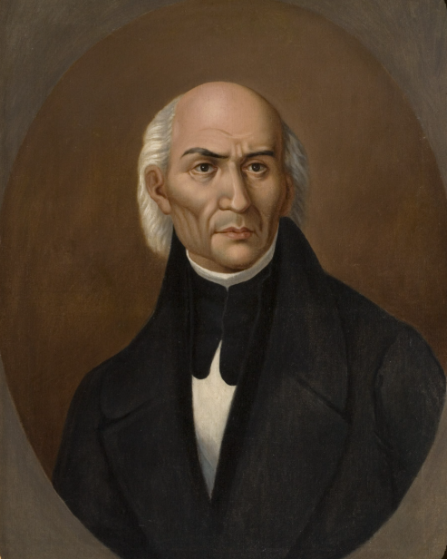
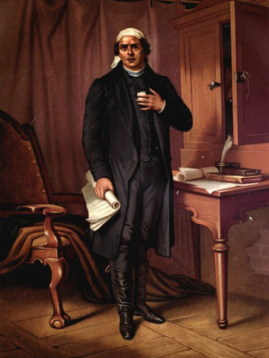
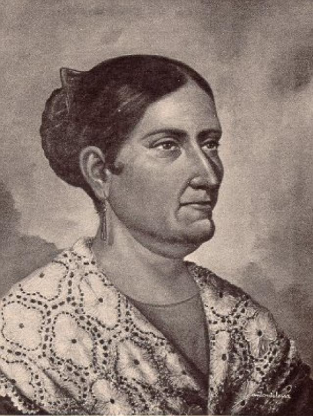
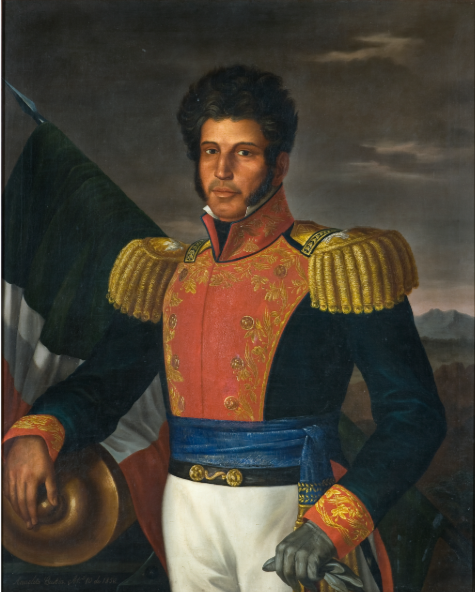
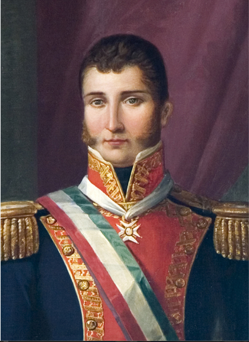
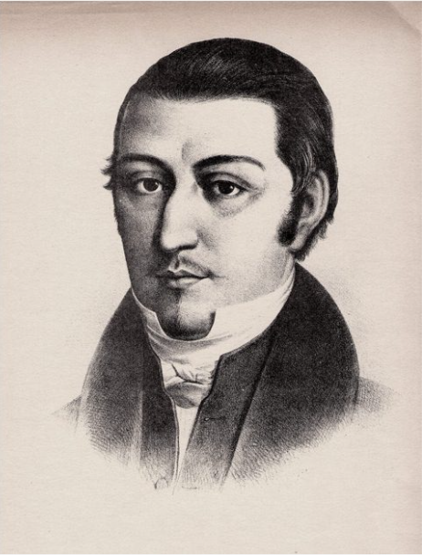
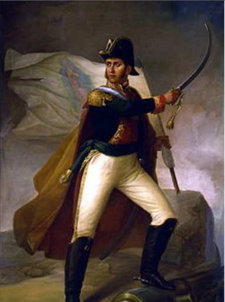

| El "Padre de la Patria". Sacerdote y militar que dio el Grito de Dolores el 16 de septiembre de 1810, iniciando el movimiento insurgente. |

El "Siervo de la Nación". Líder militar y político fundamental de la segunda etapa de la Independencia; autor de los Sentimientos de la Nación. |

La "Corregidora". Pieza clave de la Conspiración de Querétaro que avisó a los insurgentes que la conspiración había sido descubierta, adelantando el inicio del movimiento. |

General insurgente que mantuvo viva la llama de la Independencia en las montañas del sur y acordó el fin de la guerra con el bando realista. |

Militar realista que pactó la paz con Vicente Guerrero mediante el Plan de Iguala y comandó el Ejército Trigarante en su entrada triunfal a la Ciudad de México el 27 de septiembre de 1821. |

Capturado e insurgente de la primera etapa que participó activamente en las reuniones secretas y combatió junto a Hidalgo y Allende. |

Capitán del ejército realista que se unió a la conspiración de Querétaro y fue uno de los principales líderes militares junto a Hidalgo en la primera etapa de la lucha. |
